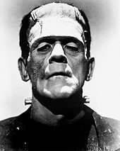
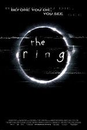
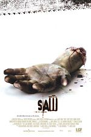
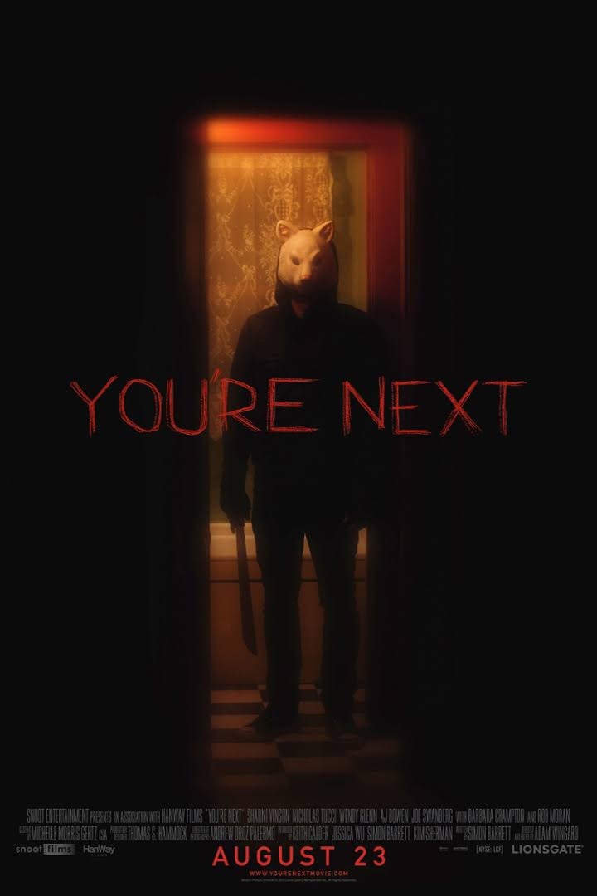
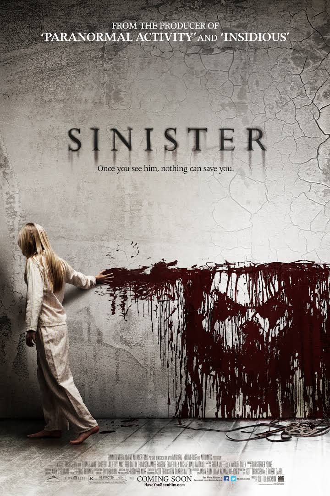

The first depictions of supernatural events appear in several of
the silent shorts created by the film pioneer Georges Méliès in the late 1890s, the best known being Le Manoir du Diable, which is sometimes
credited as being the first horror film. Another of his horror projects was La Caverne maudite (1898) (a.k.a. The Cave of the Demons, literally "the accursed cave").
Japan made early forays into the horror genre with Bake Jizo (Jizo the Spook) and Shinin no Sosei (Resurrection of a Corpse), both made in 1898.
The era featured a slew of literary adaptations,
adapting the works of Poe and Dante, among others. In 1908, Selig Polyscope Company
produced Dr. Jekyll and Mr. Hyde
In 1910, Edison Studios produced the first filmed version of Frankenstein. The macabre nature of the
source materials used made the films synonymous with the horror film genre
Though the word "horror" to describe the film genre would not be used until the 1930s
(when Universal Pictures released their initial monster films), earlier American
productions often relied on horror themes. Some notable examples include The Hunchback of Notre
Dame (1923), The Phantom of the Opera (1925), The Cat and the Canary (1927), The Unknown (1927), and The Man Who Laughs (1928). Many of these early
films were considered dark melodramas because of their stock characters and emotion-heavy plots that focused on romance, violence, suspense, and sentimentality

Boris Karloff as Frankenstein's monster
in the 1935 Bride of Frankenstein.
During the early period of talking pictures, Universal Pictures began a successful Gothic horror
film series. Tod Browning's Dracula (1931) was quickly followed by James Whale's Frankenstein (1931) and
The Old Dark House (1932), both featuring monstrous mute antagonists. Some of these films blended science fiction
with Gothic horror, such as Whale's The Invisible Man (1933) and featured a mad scientist, mirroring earlier German films. Frankenstein was the first in a series of remakes which lasted for years. The Mummy (1932) introduced Egyptology as a theme; Make-up artist Jack Pierce was responsible for the iconic image of the monster, and others in the series. Universal's horror cycle continued into the 1940s with B movies including
The Wolf Man (1941), as well as a number of films uniting several
of the most common monsters.
Other studios followed Universal's lead. The once controversial Freaks (1932), based on the short story "Spurs", was made by MGM, though the studio disowned the completed film, and it remained banned, in the United Kingdom, for thirty years.[9] Dr. Jekyll and Mr. Hyde (Paramount, 1931) is remembered for its innovative use of photographic filters to create Jekyll's transformation before the camera.[10] With the progression of the genre, actors like Boris Karloff and Bela Lugosi were beginning to build entire careers in horror. Both appeared in three of Val Lewton's atmospheric B movies for RKO in the mid-1940s, including The Body Snatcher (1945).
Hollywood directors and producers found ample opportunity for audience exploitation through gimmicks. House of Wax (1953) used the advent of 3-D film to
draw audiences, while The Tingler used electric seat buzzers in 1959. Filmmakers continued to merge elements of science fiction and horror over the following dec
ades. Considered a "pulp masterpiece" of the era was The Incredible Shrinking Man (1957), based on Richard Matheson's existentialist novel. The film conveyed the fears of
living in the Atomic Age and the terror of social alienation.
During the later 1950s, the United Kingdom emerged as a major producer of horror films. The Hammer company focused on the genre for the first time, enjoying huge international
success from films involving classic horror characters which were shown in color for the first time. Drawing on
Universal's precedent, many films produced were Frankenstein and Dracula remakes, both followed by many sequels. Other British companies contributed to a boom in horror film production in the United Kingdom during the 1960s and 1970s.
Released in May 1960, the British psychological thriller Peeping Tom (1960) by Michael Powell is regarded as a
contender for the first "slasher film".Alfred Hitchcock cemented the subgenre with Psycho released
later that year. France continued the mad scientist theme,
while Italian horror films became internationally notable.
(AIP) made a series of Edgar Allan Poe–themed films.
The financial successes of the low-budget gore films of the ensuing years, and the critical and popular success of Rosemary's Baby, led to the release of more films with occult themes during the 1970s. The Exorcist (1973), the first of these movies, was a significant commercial success and was followed by scores of horror films in which a demon entity is represented as the supernatural evil, often by impregnating women or possessing children.
"Evil children" and reincarnation became popular subjects. Robert Wise's film Audrey Rose (1977) for example, deals with a man who claims that
his daughter is the reincarnation of another dead person. Alice, Sweet Alice (1977), is another Catholic-themed horror slasher about a little girl's murder and her sister being the prime suspect. Another popular occult horror movie was The Omen (1976), where a man realizes that his five-year-old adopted son is the Antichrist. Invincible to human intervention, Demons became villains in many horror films with a postmodern style and a dystopian worldview.
Another example is The Sentinel (1977), in which a fashion model discovers that her new brownstone residence may actually be a portal to Hell.
During the 1970s, Italian filmmakers Mario Bava, Riccardo Freda, Antonio Margheriti and Dario Argento developed giallo horror films that became classics and influenced the genre in
other countries. Representative
films include: Black Sunday, Blood and Black Lace, Castle of Blood, Twitch of the Death Nerve, The Bird with the Crystal Plumage, Deep Red and
Suspiria.
In the first half of the 1990s, the genre still contained many of the themes from the 1980s. The slasher films A Nightmare on Elm Street, Friday the 13th, Halloween and Child's Play all saw sequels in the 1990s, most of which met with varied amounts of success at the box office, but all were panned by critics, with the exception of Wes Craven's New Nightmare (1994) and the hugely successful Silence of the Lambs (1991).
New Nightmare, with In the Mouth of Madness (1995), The Dark Half (1993), and Candyman (1992), were part of a mini-movement of self-reflexive or metafictional horror films. Each film touched upon the relationship between fictional horror and real-world horror. Candyman, for example, examined the link between an invented urban legend and the realistic horror of the racism that produced its villain. In the Mouth of Madness took a more literal approach, as its protagonist actually hopped from the real world into a novel created by the madman he was hired to track down. This reflective style became more overt and ironic with the arrival of Scream (1996).
In Interview with the Vampire (1994), the "Theatre de Vampires" (and the film itself, to some degree) invoked the Grand Guignol style, perhaps to further remove the undead performers from humanity, morality and class. The horror movie soon continued its search for new and effective frights. In the 1985 novel The Vampire Lestat by the author Anne Rice (who penned Interview...'s screenplay and the 1976 novel of the same name) suggests that its antihero Lestat inspired and nurtured the Grand Guignol style and theatre.
Two main problems pushed horror backward during this period: firstly, the horror genre wore itself out with the proliferation of nonstop slasher and gore films in the eighties. Secondly, the adolescent audience which feasted on the blood and morbidity of the previous decade grew up
, and the replacement audience for films of an imaginative nature were being captured instead by the explosion of science-fiction and fantasy films, courtesy of the special effects possibilities with advances made in computer-generated imagery.[22] Examples of these CGI include movies like
Species (1995), Anaconda (1997), Mimic (1997), Blade (1998), Deep Rising (1998), House on Haunted Hill (1999),
Sleepy Hollow (1999), and The Haunting (1999).

Theatrical release poster of The Ring

Theatrical release poster of Saw
Valentine (2001), notably starring David Boreanaz, had some success at the box office, but was derided by critics for being formulaic and relying on foregone horror film conventions. Franchise films such as Jason X (2001) and Freddy vs. Jason (2003) also made a stand in theaters. Final Destination (2000) marked a successful revival of teen-centered horror and spawned five installments. Jeepers Creepers series was also successful. Films such as Hollow Man (2000), Orphan (2009), Wrong Turn (2003), Cabin Fever (2002), House of 1000 Corpses (2003), and the previous mentions helped bring the genre back to Restricted ratings in theaters. Comic book adaptations like the Blade series, Constantine (2005), and Hellboy (2004) also became box office successes. Video game adaptations like Doom (2005) and Silent Hill (2006) also had moderate box office success while Van Helsing (2004) and Underworld series had huge box office success. Ginger Snaps (2000) is a Canadian film dealing with the tragic transformation of a teenage girl who is bitten by a werewolf.
Signs (2002) revived the science fiction alien theme. The Descent, a 2005 British adventure horror film written and directed by Neil Marshall was also successful. Another
notable film is Drag Me to Hell, a 2009 American supernatural horror film co-written and
directed by Sam Raimi.
Remakes remain popular, with films such as A Nightmare on Elm Street (2010),[34] The Crazies (2010), I Spit on Your Grave (2010)
, Don't Be Afraid of the Dark (2010), Fright Night (2011), Maniac (2012), and Poltergeist (2015). The 1976 film
Carrie saw its second remake in 2013, which is the third film adaptation of Stephen King's 1974 novel of the same name. Child's Play saw a sequel with Curse of Chucky (2013), while Halloween, Friday the 13th, and Hellraiser all had reboots in the works.[35][36][37] The 2013 Evil Dead is the fourth installment in the Evil Dead franchise, and
serves as a soft reboot of the original 1981 film and as a continuation to the original film trilogy.

You're Next (2011) and The Cabin in the Woods (2012) led to a return to the slasher genre; the latter was intended also as a critical
satire of torture porn. The Green Inferno (2015) pays homage to the controversial horror film Cannibal Holocaust (1980). Australian psychological
horror The Babadook (2014) was met with critical acclaim. It Follows (2014) subverted traditional horror tropes of sexuality and slasher films and
enjoyed commercial and critical success. The Conjuring deal with the paranormal.

Sinister (2012) is a British-American supernatural horror film directed
by Scott Derrickson and written by Derrickson and C. Robert Cargill. Another notable supernatural horror film is Insidious (2010). The Witch (2015) is a historical
period supernatural horror film written and directed by Robert Eggers in his directorial debut, which follows a Puritan family encountering forces of evil in the
woods beyond their New England farm. Get Out (2017) received universal acclaim from critics and audiences alike. Adapted from the Stephen King novel, It (2017) set
a box office record for horror films by grossing $123.1 million on opening weekend in the United States and nearly $185 million globally. Other horror films include
Frozen (2010),Oculus (2013), Mama (2013), Green Room (2015), The Invitation (2015), Hush (2016), Lights Out (2016), Don't Breathe (2016).